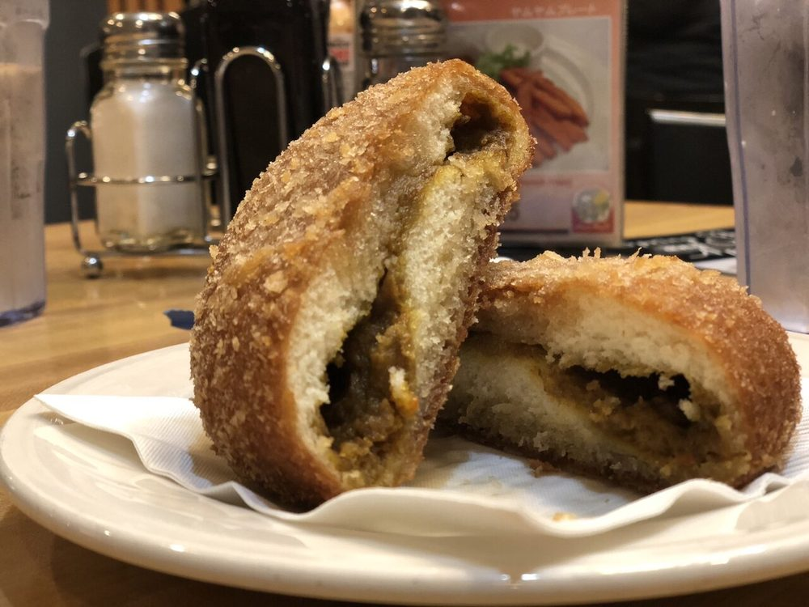
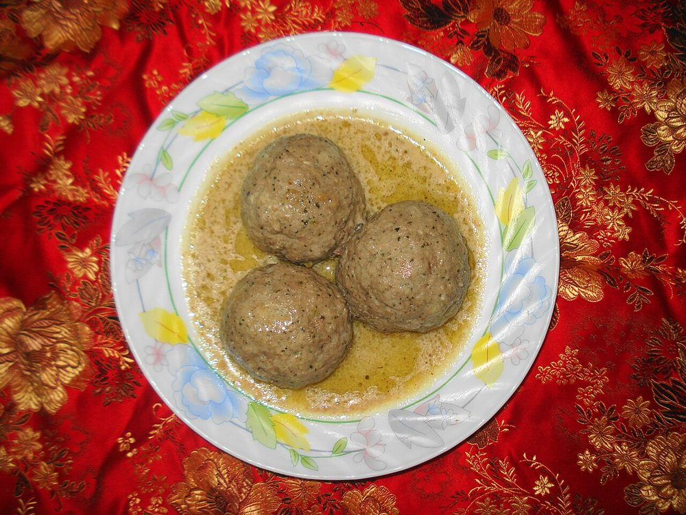
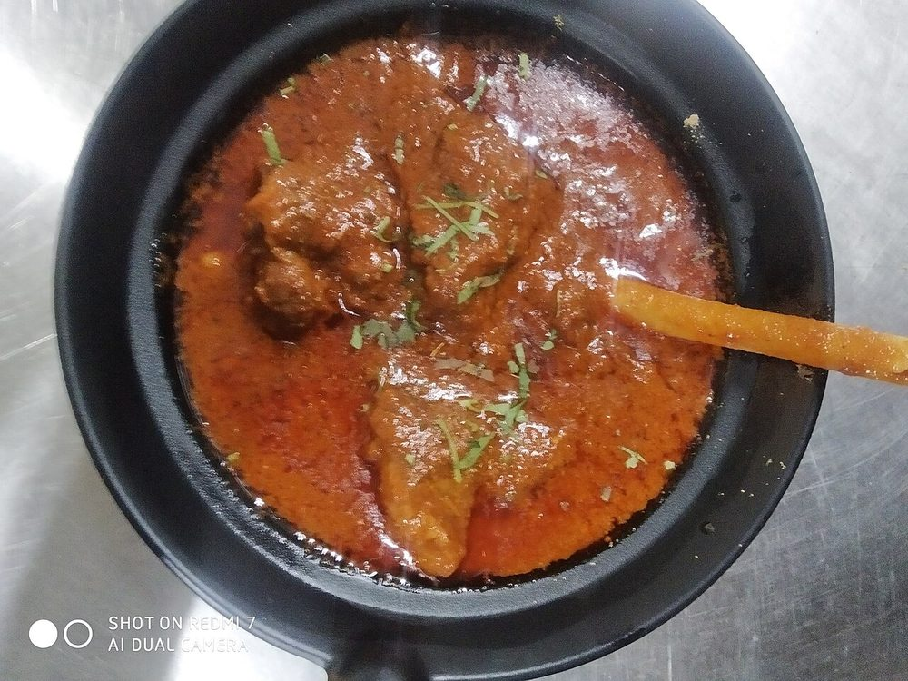
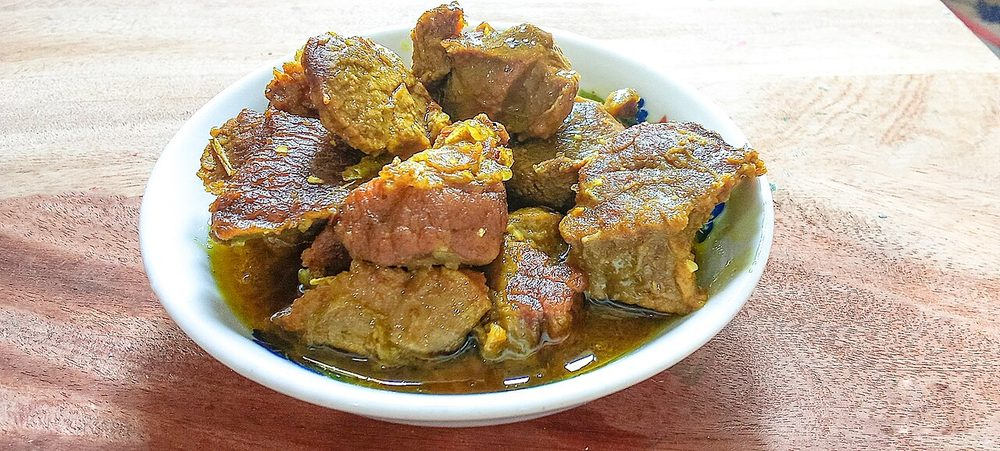
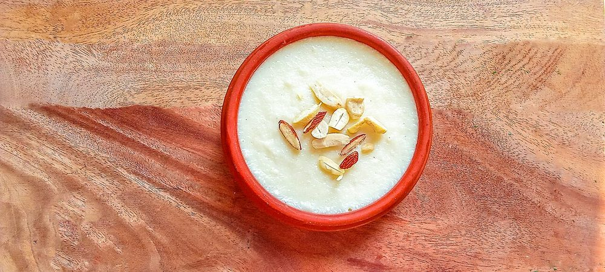
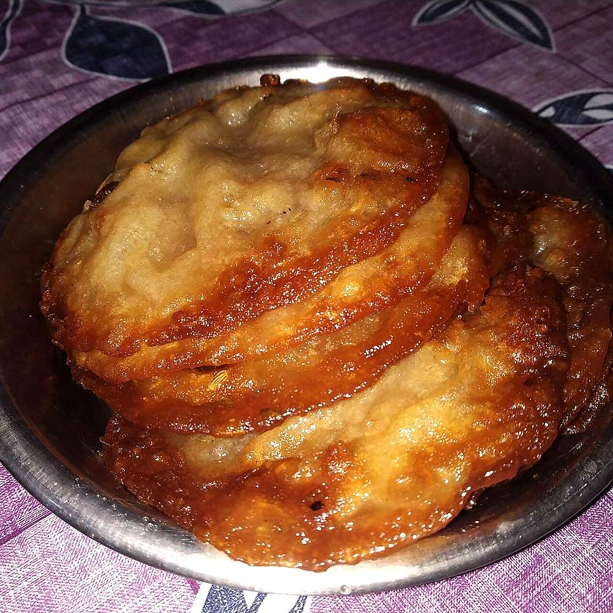
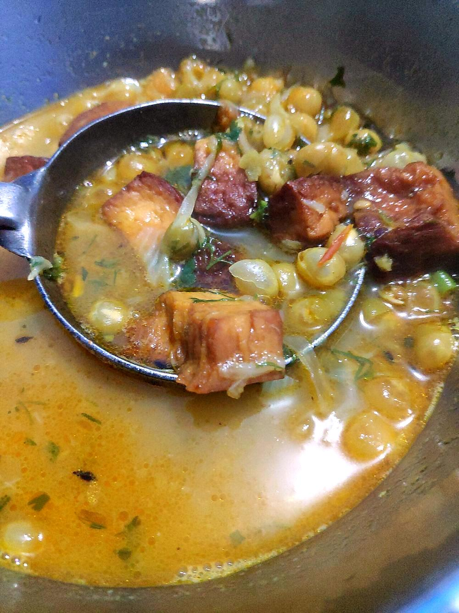
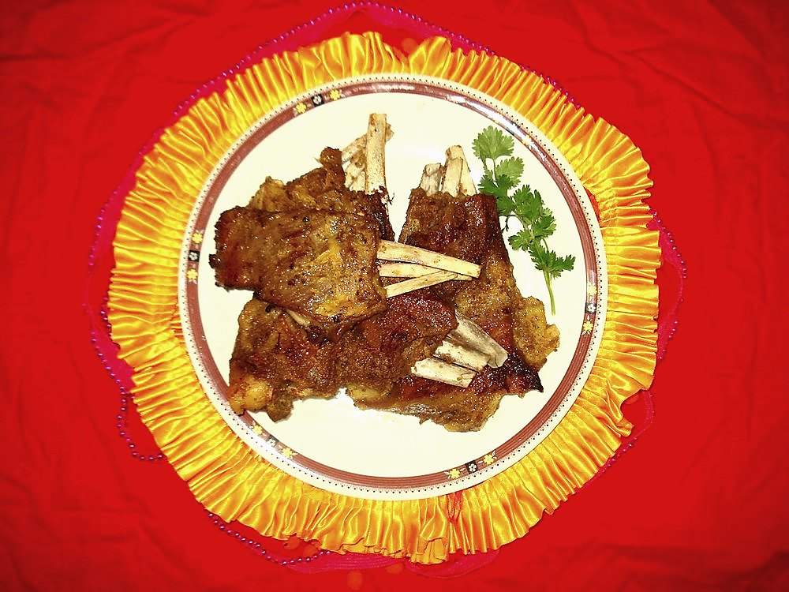
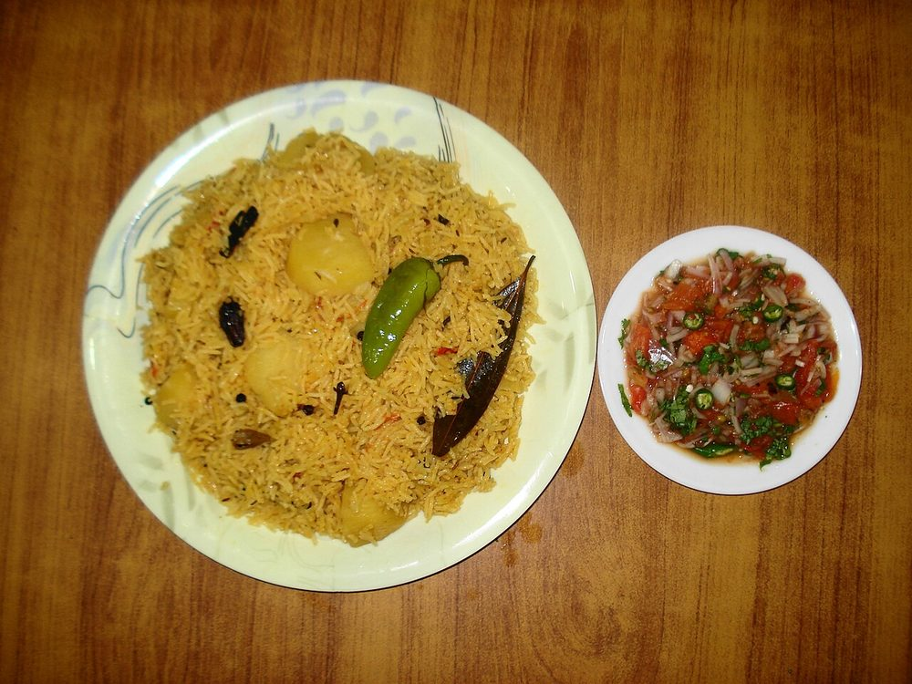

Himalayan north
Kashmiri Cuisine
A Persian-inflected court cuisine grafted onto a Himalayan valley, built around a feast that treats meat as ceremony.
A Persian-inflected court cuisine grafted onto a Himalayan valley, built around a feast that treats meat as ceremony.
Kashmiri cooking's most distinctive institution, the wazwan feast, doesn't trace back to the rest of the Indian subcontinent at all. Its roots are usually placed in the late 14th century, when cooks arriving in the wake of Timur's invasion of northern India brought Central Asian and Persian cooks, the wazas, into the valley1. Over the following centuries, under later Sultanate and Mughal-era patronage, that imported tradition merged with local ingredients (saffron, lotus stem, local lamb). What emerged was no longer quite Persian, and no longer quite anything else on the subcontinent either.
A full wazwan traditionally runs to around 36 courses. A team of wazas prepares it, led by a head chef called the vaste waza, and it is served family-style on a single large platter called a trami, four diners to a plate. Weddings and major occasions call for it, and no menu offers it; the courses build toward a defined climax that the whole sequence has been arranged to reach.
As in Goa and Rajasthan, one regional label covers two distinct culinary traditions here, split along religious lines. Kashmiri Pandit (Hindu) cooking avoids onion and garlic on religious grounds and builds its pungency instead from asafoetida (hing) and dried ginger powder (saunth), producing dishes like a pale, tangy Pandit-style yakhni. Kashmiri Muslim cooking, the tradition behind the wazwan, leans heavily on onion and garlic and produces the deep-red rogan josh most outsiders associate with the region. Same valley, same core ingredients, genuinely different everyday cooking.
The fields around Pampore, near Srinagar, are one of the few places outside Iran and the Mediterranean where saffron is grown commercially, and Kashmir treats it accordingly. Here it is a defining flavor in its own right, turning up in modur pulav (sweet saffron rice) and in desserts. Above all it goes into kahwa, a green tea steeped with saffron, cardamom, and almonds and served without milk. That makes it a genuinely different drink from the milk-based chai found almost everywhere else in India.


 Aab Gosht
Aab Gosht
 Al Yakhni
Al Yakhni

Chaman Qaliya Choek Wangun
Choek Wangun

Gushtaba Haak
Harissa
Kashmiri Dum Aloo
Kashmiri Pulav
Haak
Harissa
Kashmiri Dum Aloo
Kashmiri Pulav
 Kashmiri Rajma
Kashmiri Rajma

Marchwangan Korma Methi Maaz
Methi Maaz
 Modur Pulav
Modur Pulav
 Mujh Chetin
Mujh Chetin
 Muji Gaad
Muji Gaad

Mutton Yakhni Nadru Monje
Nadru Monje
 Nadru Yakhni
Nadru Yakhni

Phirni Rista
Rogan Josh
Rista
Rogan Josh

Roth
Ruwangan Chaman Shufta
Shufta
 Syun Olav
Syun Olav

Tabak Maaz
TeharNot cooking tonight?
Tell us what is in your kitchen, and Khaana will help you cook an authentic Indian meal.